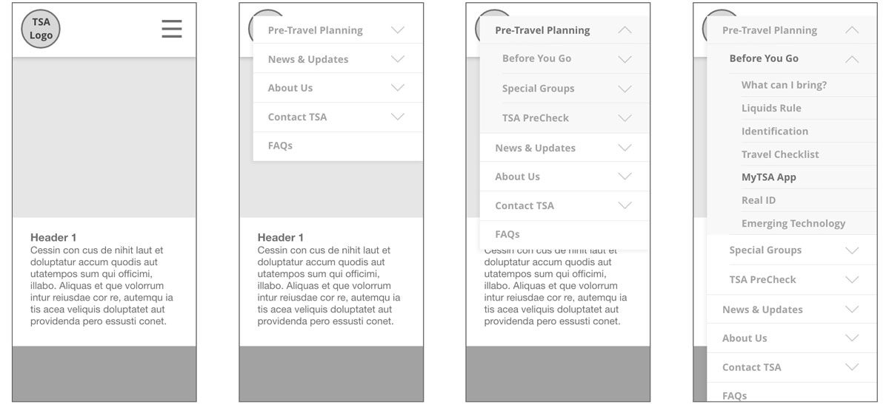
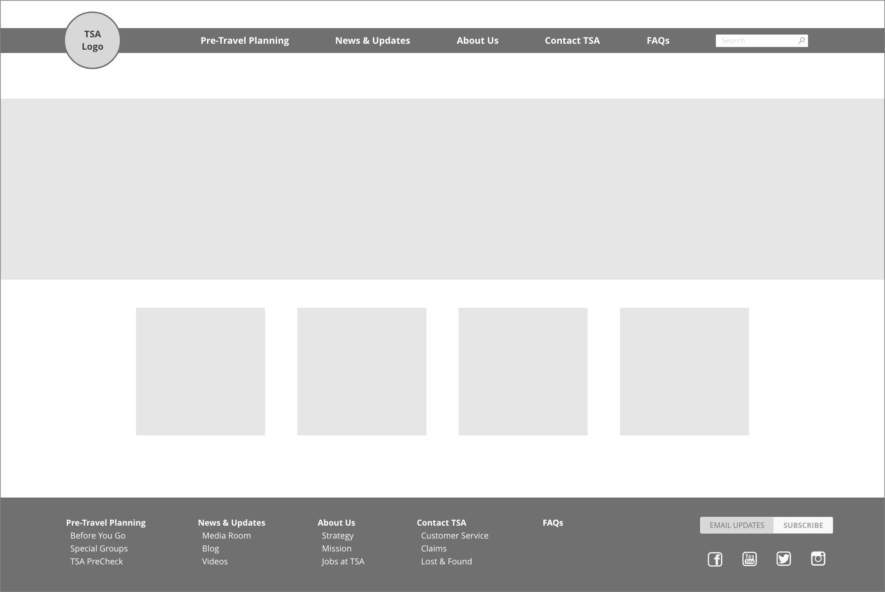
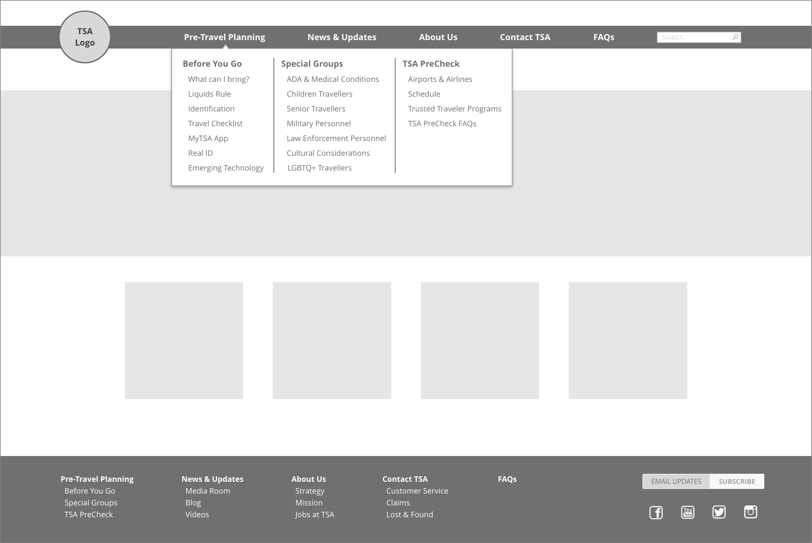
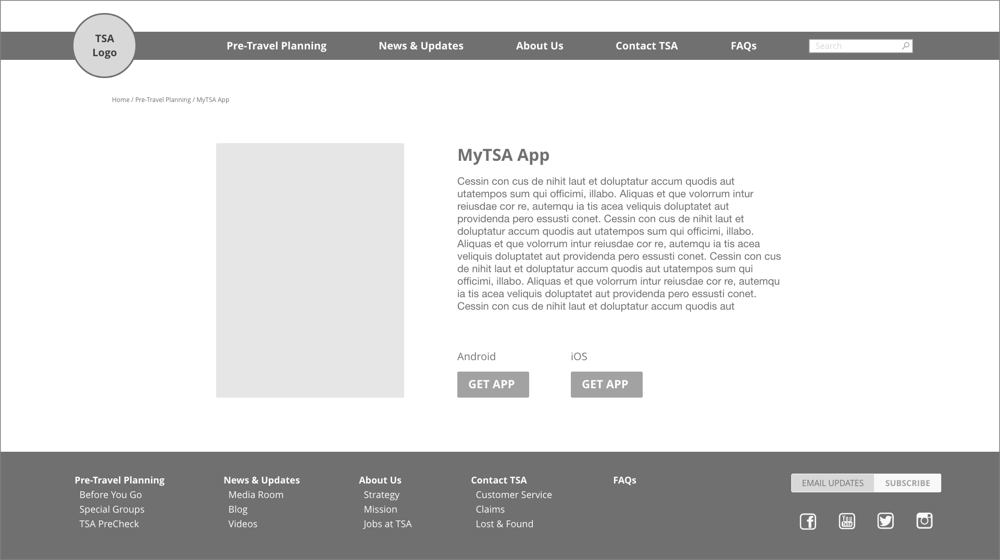
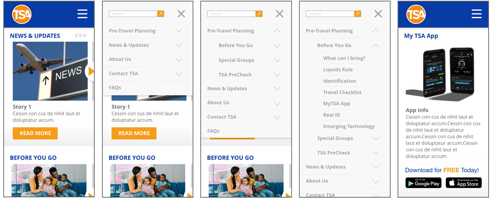
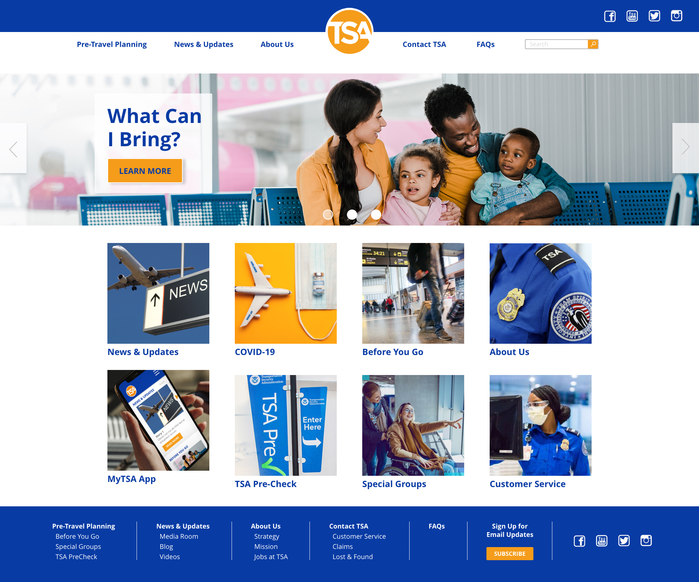
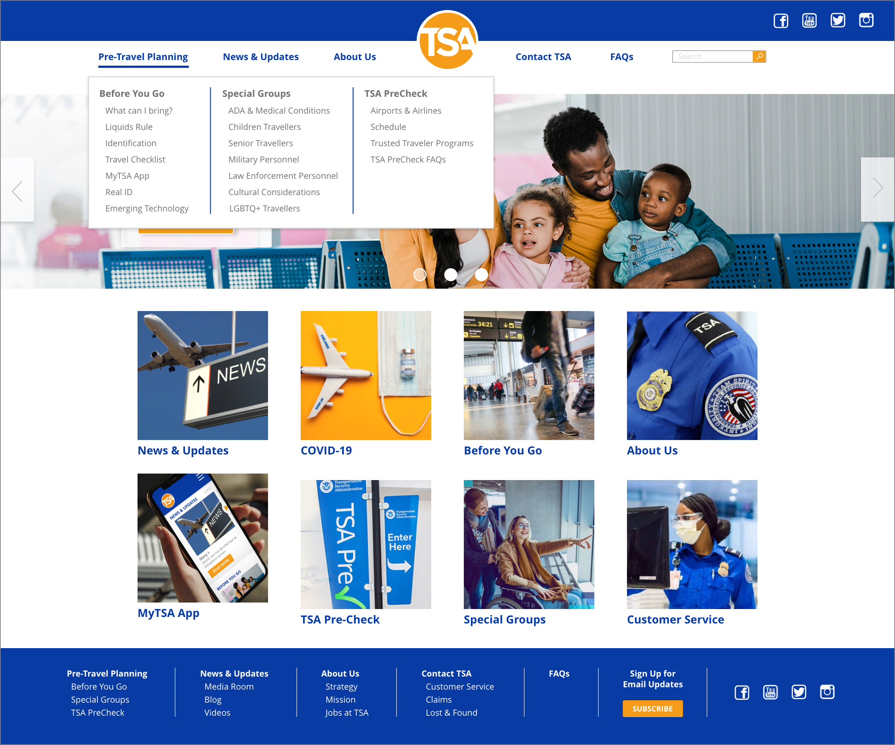

TSA Mobile & Desktop Update
Project Overview
The Solution: Bringing the MyTSA apps existence to the forefront of both the mobile and desktop web pages was our first priortiy. Resolving some of the other major pain points of the user navigation and poorly designed layout will be our secondary priorities.
Tools Used: Miro, Figma, Adobe XD, Trello
User Research
As UX/UI designers we began by creating a user persona followed by conducting a heuristic evaluation of the TSA.gov website. Once these items were completed we had a better understanding of our hypothetical users and the potential pain points associated with navigating the current website interface. We then turned our attention to conducting a more in-depth user research plan that would help to validate our hypothesis.

2x2 Matrix
After conducting our user research we compiled the data into a 2x2 matrix to help us determine which pain point items should be considered highest priority and most practical to incorporate.

Using our interview data combined with a card sort of the existing IA allowed us to reorganize the information and create a more user friendly interface that would allow for a better user experience.

User Flow
The existing user flow illustrates how the MyTSA app is very hard to find and not in an area of the site that one would think to look. By conducting a search is the only way to find the MyTSA app page. Our new user flow simplified the steps to find the app and put it on the homepage where it is easier to locate.

Wireframes & Prototypes
UI Wireframes




High-Fidelity Prototype


